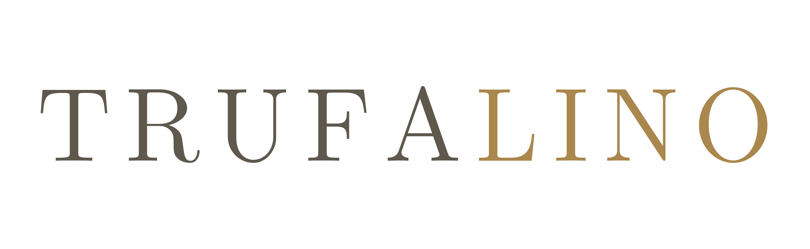

Nous contacter
TRUFALINO est une entreprise familiale lorraine qui œuvre à la mise en valeur de la truffe sur son territoire. Pour toute question, échange ou projet, écrivez-nous ou appelez-nous directement.
Qui sommes-nous
TRUFALINO est née d'une conviction simple : la Lorraine a tout pour accueillir la truffe. Ses sols calcaires, son climat et ses paysages réunissent des conditions que l'on a longtemps cherchées ailleurs.
Nous sommes une petite structure familiale. Ce qui nous guide n'est pas le volume, mais la patience : la truffe se cultive sur des années, et elle demande qu'on prenne le temps de comprendre un terrain avant d'y planter quoi que ce soit.
Travailler avec la Lorraine telle qu'elle est, ses sols et ses acteurs, plutôt que d'y transposer un modèle venu d'ailleurs.
Une truffière ne produit pas avant plusieurs années. Nous construisons dans cette durée, sans promesse hâtive.
Faire connaître la truffe, son histoire et sa culture, auprès de ceux qui la découvrent comme de ceux qui la cherchent depuis longtemps.